פותחים שנה אזרחית חדשה בפראג
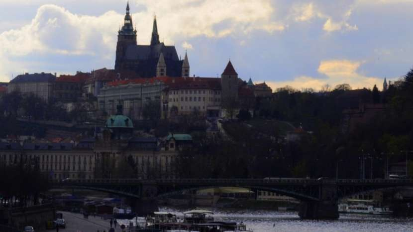
בחורף 2012 החלטנו לנסוע לטיולון קטן בפראג. חשבנו שיהיה נחמד לבקר בתקופת החגיגות של השנה החדשה אולם כאשר ראינו את המחירים (300 דולר לאדם יותר יקר משבוע לפני או אחרי) ויתרנו והזמנו כרטיסים ל-2/1-8/1 אולי לא בחגיגות השנה החדשה אבל מספיק קרוב כדי שנהנה מהאווירה ומהשווקים.
לקחנו חבילת נופש דרך אתר טרווליסט בעלות של 530 דולר לאדם (טיסה כולל מלון וארוחת בוקר) במקור הזמנו מלון מרשת IBIS בכיכר ונסלס (קצת יותר רחוק מהמרכז) אולם בסוף "שודרגנו" למלון ב-old town שזה ממש במרכז העיר צמוד לקניון פלאדיום.
קישור לכל התמונות: https://www.flickr.com/photos/127066806@N05/sets/72157648218846077/
יום 1:
בשעות הבוקר הגענו למלון (מלון פשוט וסטנדרטי אבל במרכז) שמנו את הדברים ויצאנו לבדוק את העיר.
המטרה הראשונה הייתה לקנות נעליים טובות לחורף (פראג מפורסמת באיכות הנעליים שלה) ולכן בחרנו לחפש ברשת BATA הצ'כית. סניף ענק נמצא בכיכר ואצלב (4 קומות של נעליים), אבל לפני שפנינו לחיפוש הנעליים קודם כל הלכנו לנשנש מנת צהריים באחת המסעדות באזור.
טרם טיסתנו ראיתי שישנה חברה (sandman's - http://www.neweuropetours.eu/ ) שעושה טיולים מודרכים בפראג ע"ב טיפים (באנגלית אמנם) הטיול יוצא בשעות 10:00 ו-14:00 מכיכר השעון, בשעה 14:00 התייצבנו שם לטיול שלנו שנמשך 3 שעות ברגל.
אני מאוד ממליצה לקחת טיול כזה, הטיול מועבר ע"י סטודנטים צעירים שמאוד מכירים את העיר וההיסטוריה שלה ומשתדלים להעביר את הטיול בצורה מאוד מהנה. בסוף הטיול כל אחד נותן טיפ כראות עינו. מה גם שכדאי לעשות את הטיול הזה כדבר ראשון שמגיעים לעיר כדי להכיר קצת את ההיסטוריה לפני שממשיכים לטייל לבד.
אחרי ששוטטנו במרחבי פראג העתיקה (השעון, שער אבק השריפה, כיכר וצלב, הרובע היהודי וקינחנו עם בית האופרה) השעה כבר 17:00 בחוץ חשוך (חורף) וזה הזמן לחפש נעליים ומקום לאכול. נעליים מצאנו די מהר ובמחיר סביר. חזרנו למלון לנוח מעט ובשעה 21:00 יצאנו לבחון את הפאבים שליד המלון.
המלצה- אל תאכלו במרכז העיר, תמיד תמצאו איזה סמטה צדדית שם האוכל יהיה הרבה יותר טעים והרבה יותר זול. אכלנו בפאב סטייק אנטריקוט 2 בירות וקינוח בעלות של 100 ₪...
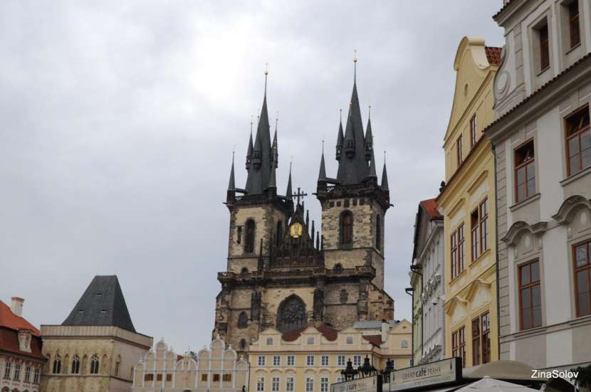
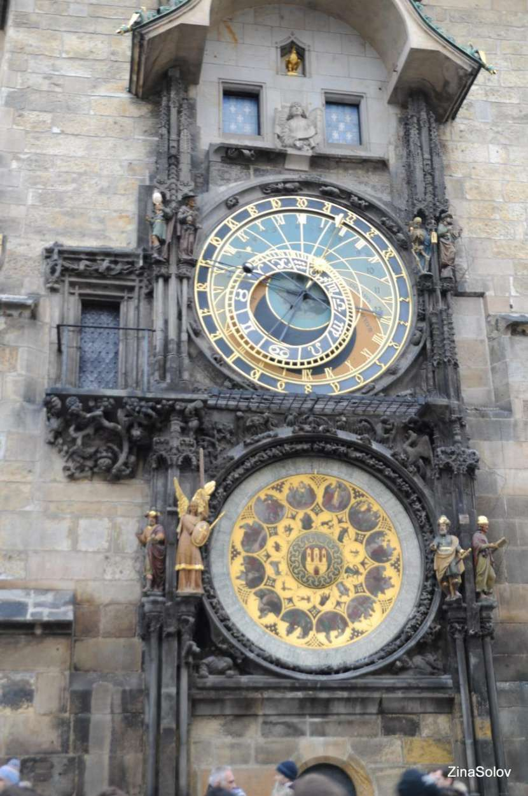
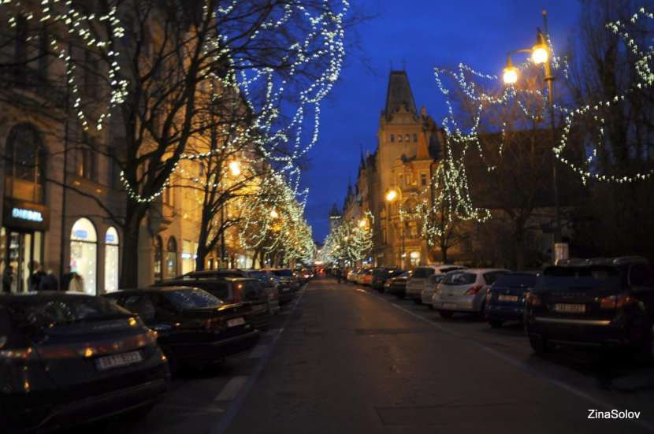
יום 2:
אחרי ארוחת בוקר יצאנו לכיוון מצודת פראג. עפ"י המפה זה נראה די רחוק ולכן החלטנו להשתמש בשירותי התחבורה הציבורית. התחבורה בפראג פשוט מעולה אין מצב שמחכים יותר מ-5 דקות למטרו או לחשמלית. ליד המלון נמצאת תחנת מטרו, ניתן לרכוש כרטיס יומי/72 שעות או ל-5 ימים (ניתן לרכוש בקופה או בקיוסקים או במכונה - אבל זה בצ'כית) קנינו כרטיס יומי וכנסנו למטרו. חשוב לתקף את הכרטיס (להעביר במכונה) אחרת תקבלו כנס, יש המון שוטרים שמזהים תיירים ובודקים להם את הכרטיס (בכל נסיעה יצא שיבדקו את הכרטיסים שלנו).
אז איך מגיעים למצודה? אפשר ללכת ברגל כמובן דרך גשר קארל כחצי שעה הליכה. אנחנו שימנו פעמנו למנזר סטרהוב ולמוזיאון המיניאטורות (קצת צפונית למצודה). נסענו במטרו עד Malostranskněst/span> ומשם לקחנו חשמלית קו 22 או 23 (יורדים למעלה בגבעה וממש מגיעים למנזר).
ליד המנזר יש את מוזיאון המיניאטורות- Prague 1, Strahovske nadvori 11 שעות פעילות מ-9-17 בכל יום, כניסה 50-70 קרונות צ'כיות. המוזיאון קטן ומאוד חביב מציג המון מיניאטורות שהוכנסו לקוף של מחט למשל... אפשר להקדיש חצי שעה 40 דקות גג.
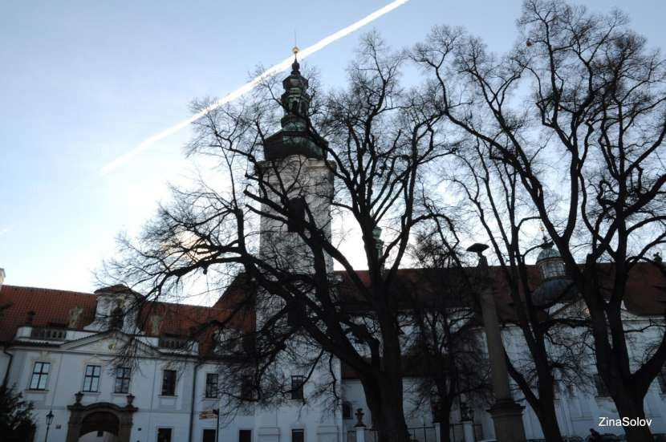
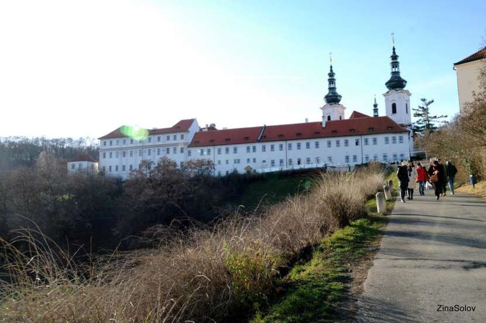
משם ישנו שביל מחבר את גבעת פיטרין עם המצודה והתצפית מהממת על כל העיר.
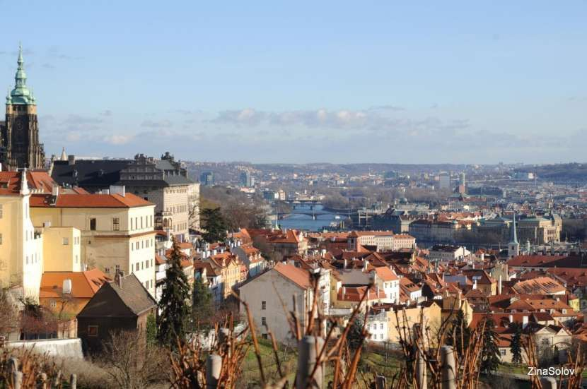
אנחנו טיילנו להנאתנו עד המצודה בדרך נכנסנו לאחת הקפיטריות לאכול עוגה עם יין אדום חם (מעדן אמיתי כשבחוץ קור אימים).
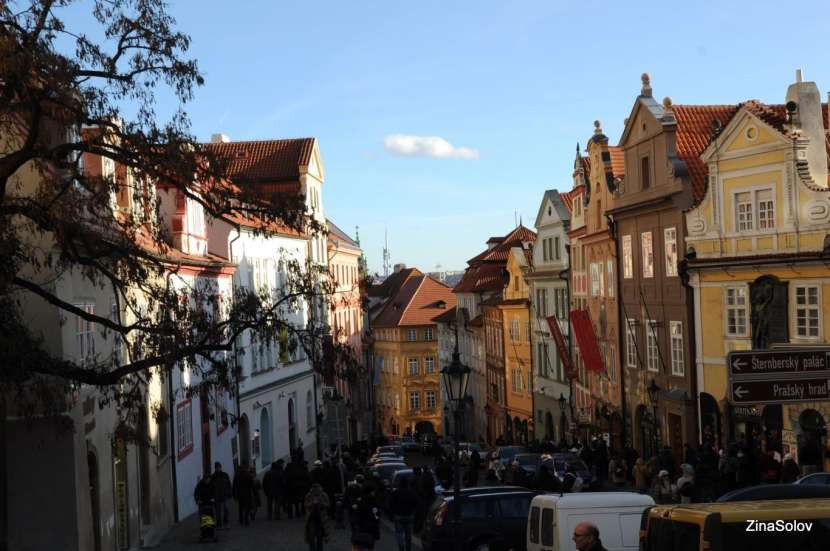
נכנסנו למצודה, למי שרוצה כל שעה עגולה יכול לצפות בחילופי המשמר. המצודה ענקית, במרכזה יש כנסיה וסביב יש את מושבי הפרלמנט והעירייה. הכל מקושט לקראת החג, עצים ומזרקות בכל מקום (בחורף המזרקות לא פעילות בגלל שהמים קופאים). טיילנו במצודה, עברנו בסמטאות ויצאנו לעוד תצפית יפה על העיר.
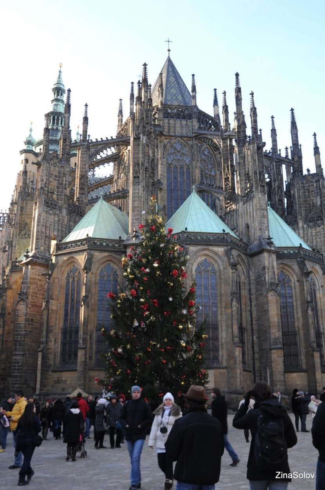
משם ירדנו לנהר שם עפות המון ציפורים וברבורים שמחכים שיאכילו אותם, נחנו קצת על הגדה ועברנו לטייל ברובע מאליה סטרנה, חצינו את תעלת השטן (צ'רטובקה), ראינו את הפסלים של האומן המפורסם צ'רני.
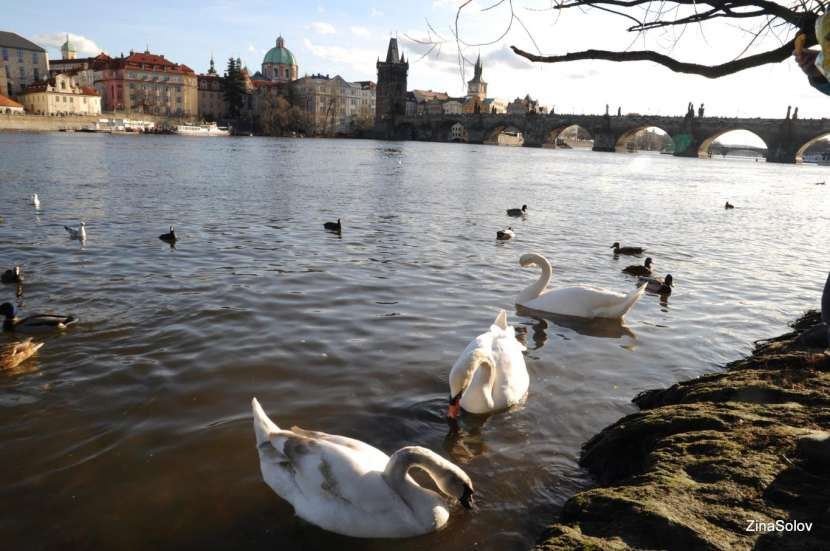
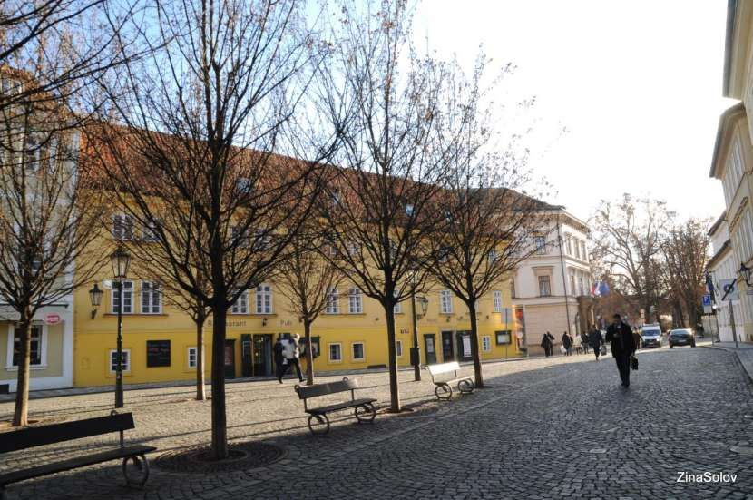
השעה 15:00 ואנחנו רעבים, ברובע מאליה סטרנה יש המון מסעדות וממש זולות. אנחנו אכלנו באחת מהן בעלי אכל קילו בשר ואני מרק בלחם עם קינוח ושתייה ויצאנו בנזק של 200 ₪... אגב בפראג הבירה זולה יותר משתייה קלה.
משם המשכנו לקיר של לנון ומשם ברכבל לגבעת פיטרין (הכרטיס היומי של התחבורה הציבורית תקף גם לרכבל).
בחורף הגבעה די עקרה אבל עדיין מקום מאוד חביב, יש שם את מגדל האייפל (בקטן יותר) שניתן לעלות עליו ולתצפת על העיר, למטה יש גם קפיטריה כדי להתחמם. כמו כן במקום יש גם מבוך ומבוך מראות אולם לשם כבר לא נכנסנו.
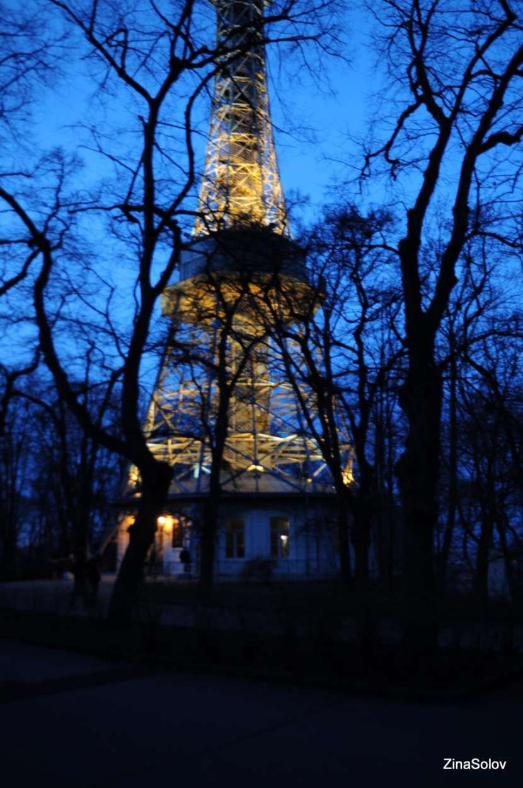
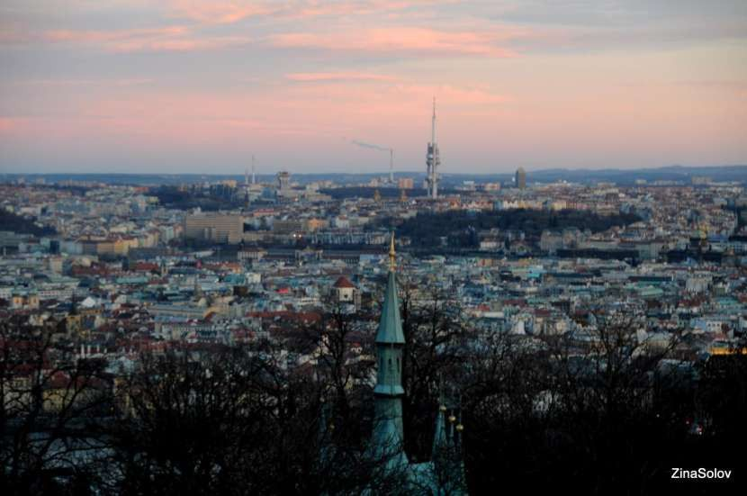
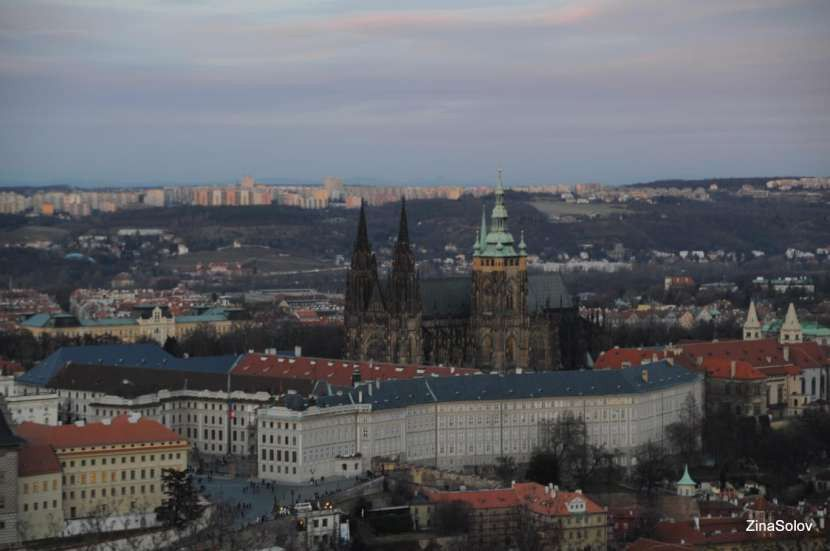
אחרי שירדנו מהתצפית על האייפל כבר היה חשוך והחלטנו לנצל את הזמן ולקפוץ לפלנטריום שנמצא על הגבעה (חשוב להתעדכן מה שעות הפעילות באתר http://www.observatory.cz/english.html) כניסה – 50 קרונות.
המקום קטן וחביב ישנה תצוגה והסבר על האסטרונומיה והחלל, ניתן לעלות ולצפות בכוכבים מהטלסקופ ויש גם סרט הסבר, העובדים מאוד חביבים ומספקים המון הסברים, למי שמתעניין די מומלץ.
משם חזרנו בחשמלית למלון לנוח, ובערב עוד סיבוב פאבים.
יום 3:
מוקדם בבוקר עשינו טיול לתחנה המרכזית FLORA (גם מטרו גם רכבות וגם אוטובוסים) במרחק הליכה קצר מהמלון כדי לקנות כרטיסים למחר לקראלובי וארי. קנינו כרטיס בחברת student agency ב-140 קרונות.
היום נוסעים למצודת וישהאראד. המצודה נמצאת בחלק הדרומי של העיר וצריך להגיע לשם במטרו (קו אדום תחנת וישהאראד). המצודה עצמה די גדולה, כניסה בחינם. http://www.praha-vysehrad.cz/Plan-of-Vysehrad
הגענו לשם די מוקדם בבוקר והתחלנו את הטיול בהקפת חומות המצודה, המקום משמש גם את המקומיים כפארק לטיול (גם עם הכלב). טיילנו במקום כשעתיים ומשם חזרנו למרכז.
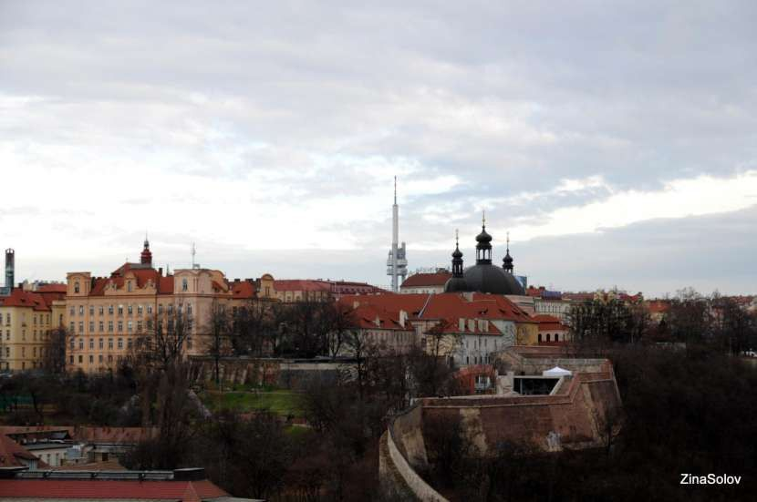
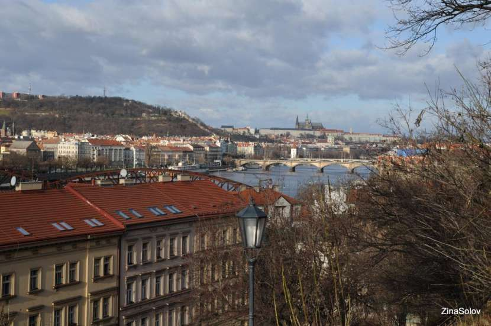
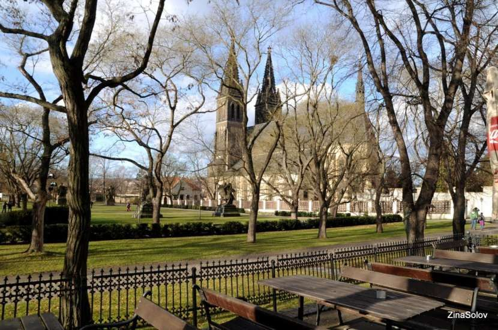
בחורף, במרכז העיר (לא רחוק מכיכר השעון) פותחים זירה להחלקה על הקרח, אנחנו כמובן הלכנו לבדוק את כישורינו. בעבור 50 קרונות לאדם מקבלים נעלים לשעה וניתן להחליק בכיף, המקום לא הומה ודי נחמד. בעלי מסתבר בעל כישרון טבעי וכבר אחרי כמה דקות הוא החליק כמו אחד המקומיים בניגוד אלי שעד שצברתי ביטחון די מהר נפלתי בצורה די מביכה על הישבן...
אז כניחומים על הישבן הכואב הלכנו לשתות יין אדום ים עם עוגה ומשם המשכנו לטייל קצת בעיר העתיקה ועל גשר קארל.
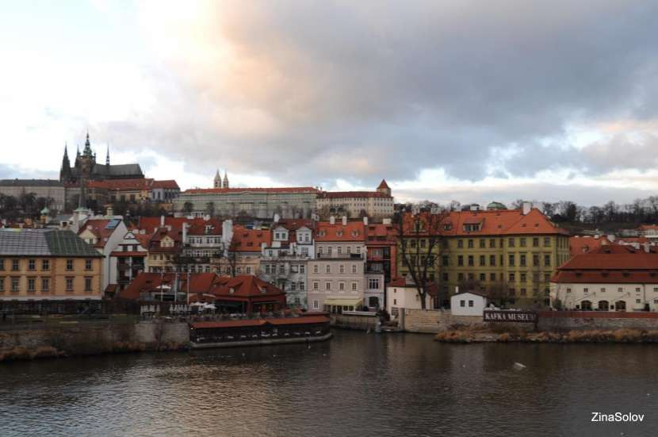
בערב היו לנו כרטיסים לתיאטרון השחור - http://www.wow-show.com/en/ יש מופע כל יום בשמונה בערב עלות 500/550 קרונות (המקום נמצא ליד פסאג' לוצרנה בכיכר וצלב). אנחנו מאוד נהנינו מהמופע ולסוף היום קינחנו באחד הפאבים באזור.
יום 4:
היום נוסעים לקארלובי וארי. הגענו בבוקר בשעה היעודה לתחנה, נסענו עם חברת ה- student agency הם מעט יותר יקרים מהאחרים אבל מקבלים קפה וסרט ויחס טוב בנסיעה. הנסיעה עצמה כשעתיים, יש שתי תחנות ירידה: הראשונה בתחנה המרכזית שם ניתן גם לקחת מפה של העיירה. השנייה יותר קרוב למרכז אבל שימו לב שבחזרה האוטובוס יוצא מהתחנה המרכזית.
העיירה מפורסמת בזכות המעיינות החמים שלה ומשמשת כאתר תיירות מרפא שמגיעים אליו תיירים מכל העולם. הגענו ביום סגרירי, עצירה ראשונה היא לקנות מטריות ולשתות קפה. משם התחלנו לטייל, מצאנו חנות נעליים במבצע אז בעלי התחדש עם זוג נעלי חורף משלו. ואז פתאום התחיל לרדת שלג...
אחרי התלהבות ראשונה מהשלג נכנסנו למסעדה לארוחת צהריים. שבעים ויבשים המשכנו לטייל, ראינו את הגייזר המקומי של העיירה, ברקע על ההרים כוסו בשלג שרק עתה ירד. רצינו ללכת לתצפית בהרים (נראה DIANA אבל מסתבר שבחודש ינואר התצפית לא פועלת).
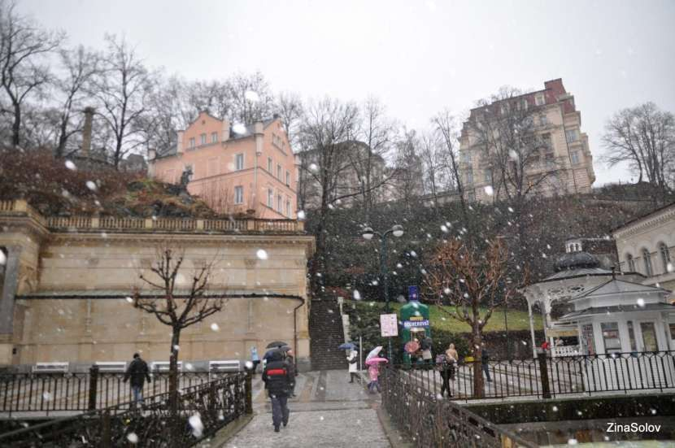
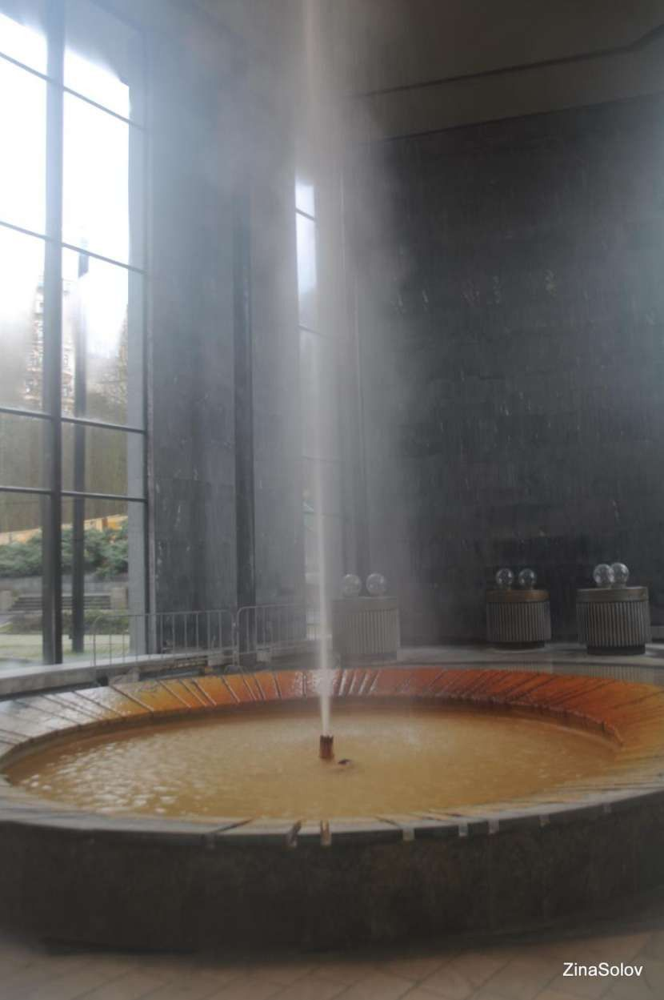
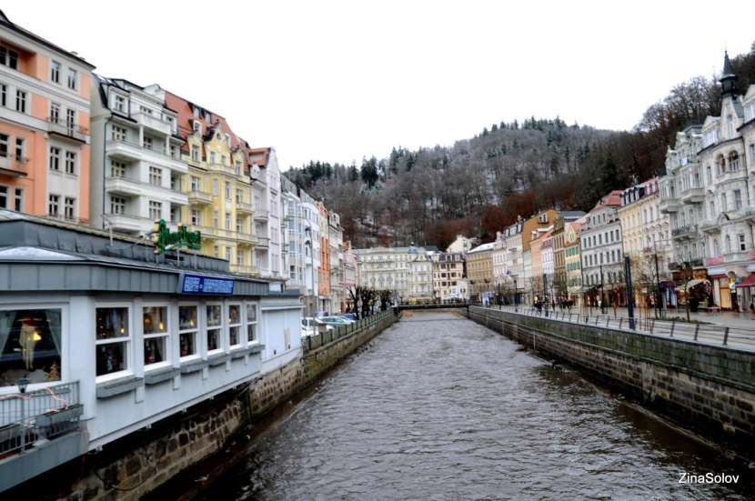
אחרי שמיצינו חזרנו לתחנה המרכזית בשעה 16:00 ובשש בערב כבר היינו בפראג. מנוחה קצרה במלון ושוב יוצאים לטייל, הפעם החלטנו דווקא לאכול סושי – שמאוד מאוד יקר בפארג אבל די טעים. וכאן אני חוזרת על הטיפ, לא ללכת למקומות במרכז תסטו כמה סמטאות הצידה ותמצאו מסעדות הרבה יותר זולות וטעימות.
יום 5:
היום החלטנו לעשות שופינג. בהתחלה עשינו סיבוב ובחנו את החניות ליד המלון (יש כמה מציאות בדגש על מעילים ונעליים) ושם נסענו לקניון פלורה (קו אדום) קניון די גדול אבל לא שונה מהקניונים בארץ, טיילנו שם כשעה וחצי וחזרנו למרכז.
היעד הבא היה לבדוק את קניון פלאדיום שנמצא ממש לידנו, גם הוא קניון ענקי ומלא בחניות (גן עדן לחובבי השופינג אולם המחירים די דומים לארץ), היות ואנחנו לא כאלה חובבי שופינג די מיצינו את העניין.
לקראת הערב, בגלל שזה יום שיש החלטנו להתפנק בארוחת ערב בכיכר השעון (כן כן אני יודעת שזה יקר אבל היינו חייבים לנסות). האווירה מאוד נחמדה, תצפית על השעון (שבכל שעה עגולה יש מופע קטן של הדמויות).
האוכל היה בסדר אבל כמו שציפינו די יקר, אם בפאבים היינו אוכלים סעודת מלכים ב-200 ₪ כאן אכלנו ארוחה נחמדה (לא הכי טעימה אבל בסדר) ב-300 ₪, אבל היינו חייבים לנסות.
משם שוטטנו קצת על גשר קארל וברובע מאליה סטרנה, שתינו יין חם מהדוכנים (כדי להתחמם) וחזרנו למלון עייפים ומרוצים.
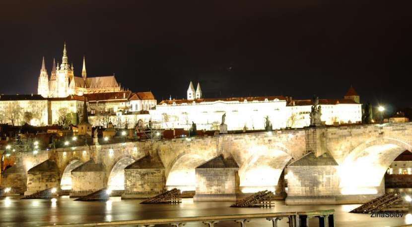
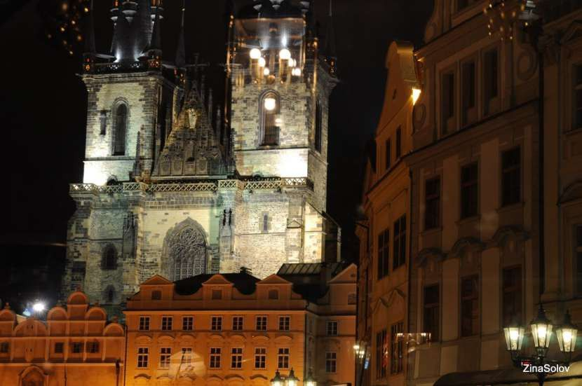
יום 6:
היום האחרון שלנו בפארג, לא תכננו שום דבר מיוחד פרט ללטייל עוד קצת בעיר. התחלנו את הבוקר בנסיעה לבית המרקד -Rašovo nřež80, 120 00 Praha 2 Czech Republic ניתן להגיע גם במטרו. משם טיילנו לאורך הנהר ועד לכיכר ואצלב.
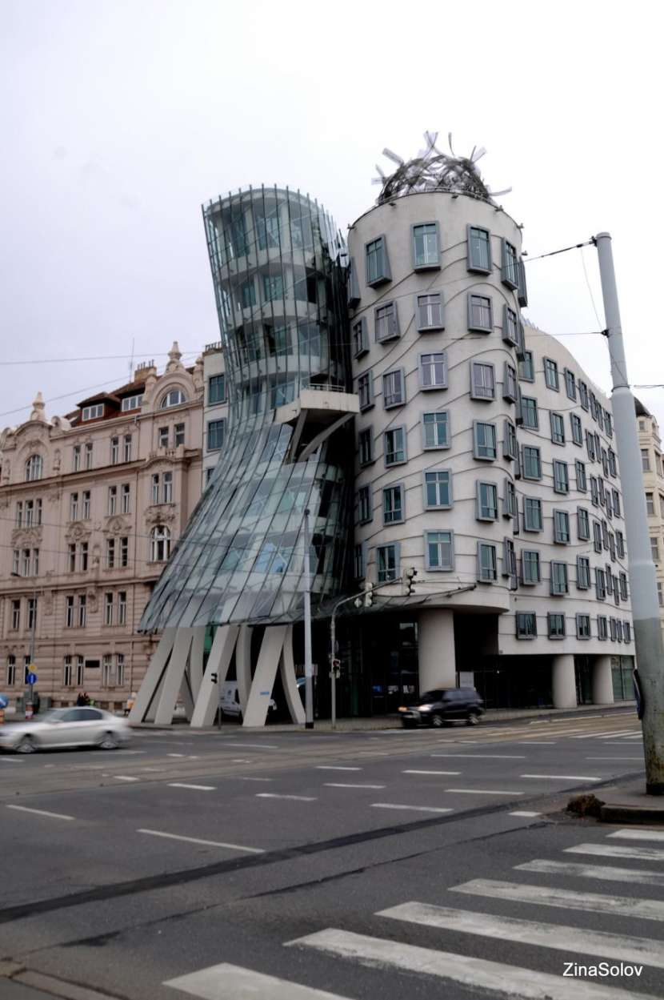
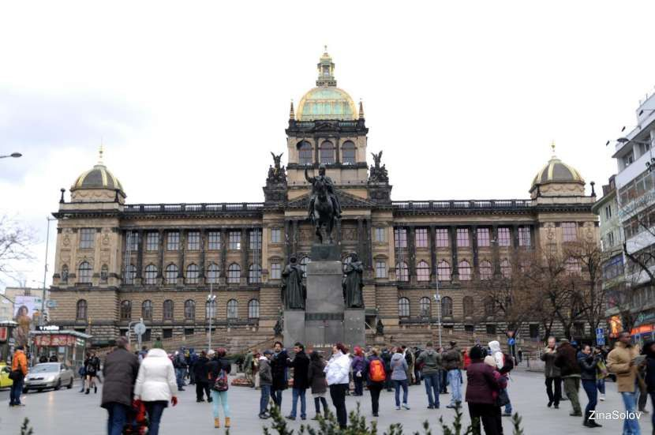
בצהריים הלכנו לטייל ברובע היהודי (שנחשב לממש יוקרתי בימנו עם פרארי חונות בכל צד), למוזיאון היהודי לא נכנסנו אלא סתם שוטטנו ברובע. התחיל לרדת גשם אז ניצלנו את הזמן ולקחנו שיט של שעה בנהר, המדריך סיפר לנו עוד קצת על העיר, הראה לנו היכן היה הפסל של סטאלין (שכבר לא קיים) ועוד סיפורים על העיר.
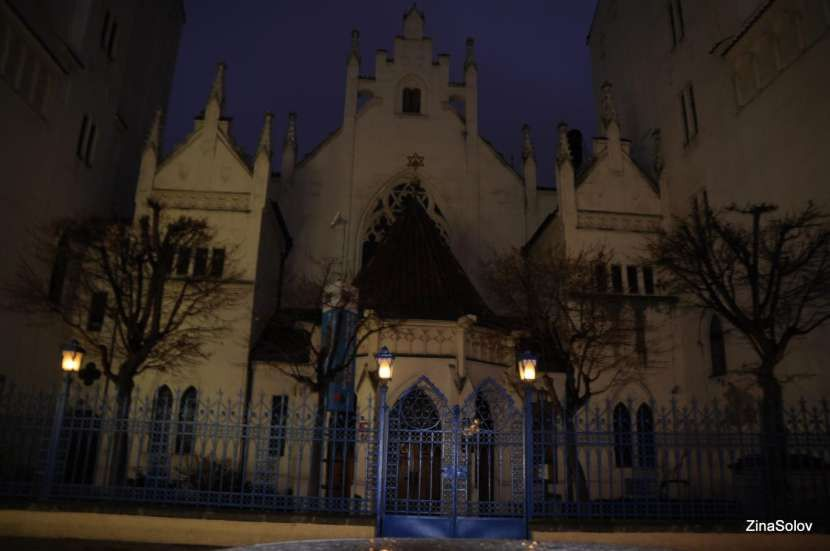
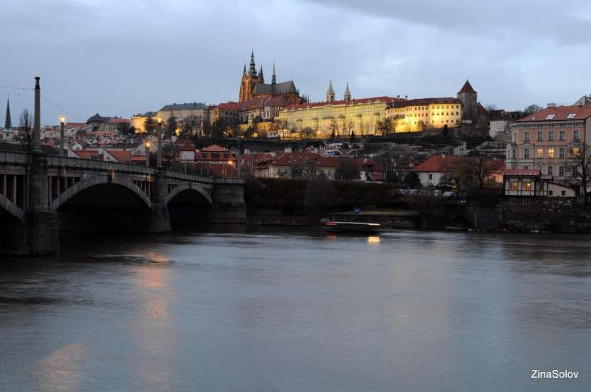
כשחזרנו הפסיק הגשם ואנחנו החלטנו לנצל את הזמן עד הערב (ב-21:00) איסוף לשדה התעופה, הלכנו לאכול ארוחת ערב על אחת האוניות שעוגנות על הנהר (די יקר ופחות טעים אבל הנוף על הנהר והמצודה ברקע שווה את זה).
ולקינוח קנינו כרטיסים הבלט בתיאטרון של פראג (ממש ליד המלון) הבלט הסתיים ב-22:00 אז המוכר הסכים למכור לנו כרטיסים רק לחלק הראשון.
ב-21:00 אספו אותנו מהמלון וכך תם לו טיול החורף שלנו.
טיפים:
1. את העיר ניתן למצות תוך 4-5 ימים. מרכז העיר ממש קטן והכל נגיש במרחק הליכה.
2. תחבורה ציבורית מעולה, ניתן לרכוש כרטיס יומי/72 שעות או ל-5 ימים בקופות או בקיוסקים (עדיף במזומן כי בקיוסקים לא מקבלים אשראי וגם לא בכל הקופות). הכרטיס תקף לכל סוגי התחבורה במרכז העיר
3. לא לוותר על הסיור של SANDMANS (מסובב טיפים) כבר ביום הראשון, טיול של 3 שעות שיכיר לכם את העיר וההיסטוריה שלה
4. המסעדות הזולות והטעימות ביותר נמצאות בסמטאות הצרות. אל תחששו להיכנס לאחד הרחובות המרוחקים יותר ממרכז העיר כדי לאכול - אתם תיהנו מהכמות מהאיכות ומהמחיר!
5. בירה זולה יותר מקולה! ובחורף בכל מקום מוכרים לחמניות מסוכרות ויין אדום חם שמאוד עוזר להתחמם במחירים מצחיקים (5-6 ₪)
6. מומלץ ללכת לאחת ההצגות בתיאטרון השחור, אנחנו היינו ב-Wow והיה נחמד מאוד
7. לא לוותר על נסיעה יומית לקארלובי וארי. כרטיס ניתן לקנות בתחנה המרכזית Flora נסיעה של שעתיים ואתם בעיירה מקסימה שבהחלט כדאי להקדיש לה יום.
8. סניפי המרת כסף יש בכל פינה אבל שימו לב שבכולם השער די שונה אז כדאי שתאתרו מקום טוב ואל תחליפו את כל הכסף בבת אחת כי אולי תתקלו במקום עם שער טוב יותר.
9. פראג מדהימה גם בחורף! אל תחששו מהקור.
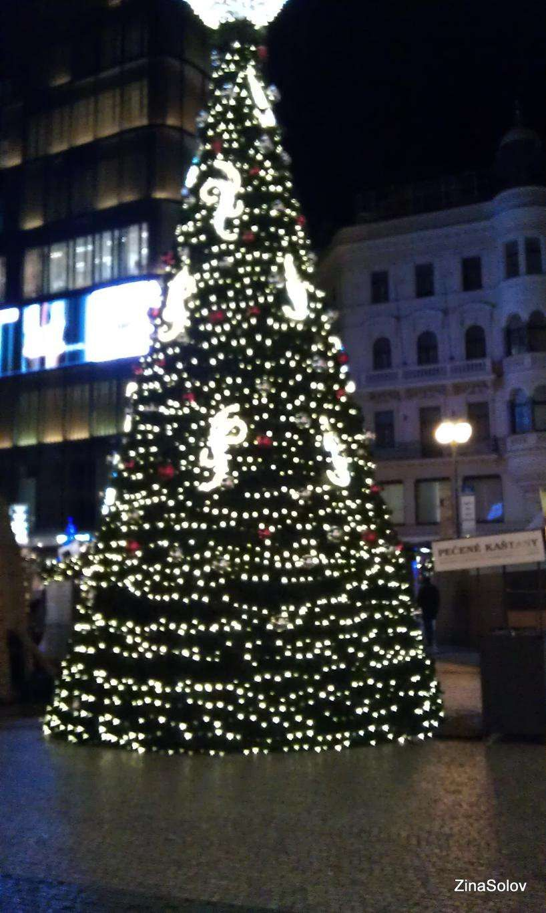